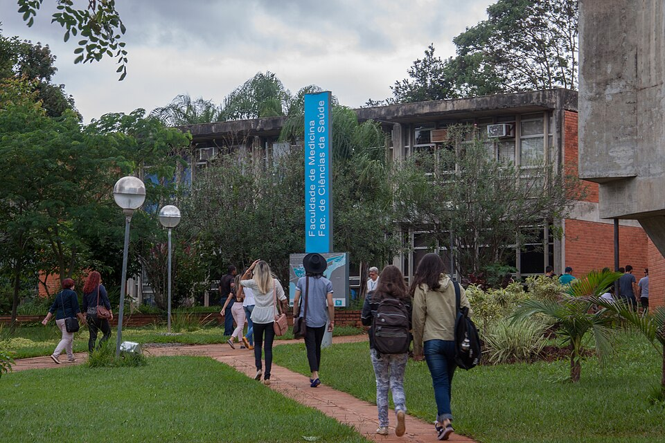

Universidade de Brasília · SES-DF · desde 2016
A Escola de Pacientes DF é o grupo de atividades acadêmicas coordenado pelo Prof. Dr. Estêvão Cubas Rolim: formação médica na UnB, educação permanente para profissionais, produção científica em Saúde Coletiva e produtos premiados incorporados pela rede pública de saúde.

Projetos em destaque
Modelo visual de receituário com linguagem clara e pictogramas, criado na UBS 2 do Itapoã, validado cientificamente pelo método Delphi e incorporado institucionalmente pela SES-DF. Premiado pelo INOVA Brasília e pela Mostra SUS DF, com apresentação internacional no ICASE 2026.
2.042 simulações clínicas presenciais evoluíram para pacientes digitais mediados por IA — treino de anamnese e conduta com GPTs próprios.
Livros prescritos junto com remédios para crianças e adolescentes no Itapoã. Destaque na Globo e Prêmio Saúde Cidadã 2018.
Canal no YouTube com vídeos de orientação, materiais impressos e conteúdo para mídias sociais em linguagem acessível.
Quem coordena
Consultor Legislativo (Saúde) do Senado Federal — 1º lugar no concurso —, professor de Medicina da UnB, conselheiro e diretor do CRM-DF, médico da Estratégia Saúde da Família na SES-DF e doutor em Saúde Coletiva pela UnB.
Conduz a Escola de Pacientes DF desde 2016, integrando universidade, serviço de saúde e comunidade — com um grupo de pesquisa formado por estudantes de Medicina e Enfermagem.
Produção científica
Estêvão Cubas Rolim (org.) e colaboradores · Editora Reflexão Acadêmica
Acessar o livro ↗Estêvão Cubas Rolim · Brazilian Journals Editora, 113 p.
DOI ↗RECIMA21 — Revista Científica Multidisciplinar
Brazilian Journal of Development
Rev. Observatorio de la Economía Latinoamericana
European Journal of Public Health (Qualis A1 Saúde Coletiva)
Impacto institucional
Comece por aqui
Vídeos, orientações impressas e conteúdo prático de saúde em linguagem simples.
Acessar → 🎓Disciplinas da UnB, simulações, testes, casos clínicos e material de estudo.
Acessar → 🔬Publicações, congressos, banco de citações, métodos e linhas de pesquisa.
Acessar → 🩺Ferramentas clínicas, protocolos, telessaúde, sistemas e educação permanente.
Acessar →São mais de 440 páginas de materiais: temas clínicos, simulações, testes, citações e documentos técnicos acumulados desde 2016. Use a busca no topo do site ou navegue pelo índice.